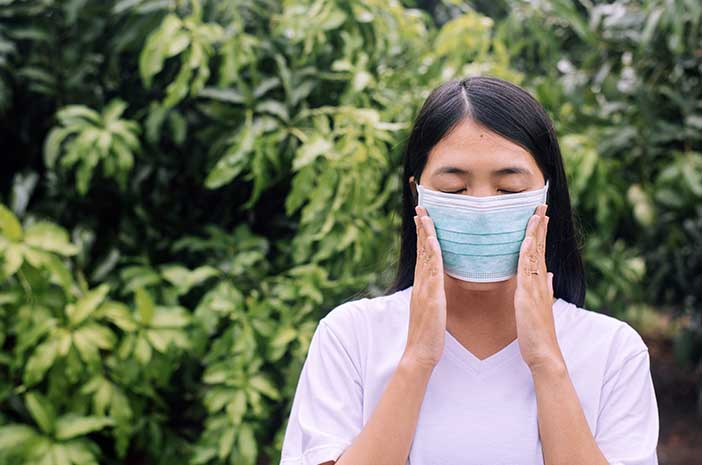

- Cara Mencegah Jerawat saat Memakai Masker
 Gejala Apa yang Paling Sering Dirasakan Pasien Covid-19 di Indonesia?
Gejala Apa yang Paling Sering Dirasakan Pasien Covid-19 di Indonesia? Anies Beberkan Krisis yang Dialami Jakarta Gara-gara Corona
Anies Beberkan Krisis yang Dialami Jakarta Gara-gara Corona- 5 Cara Efektif agar Tidak Tertular Virus Corona
 Tips Atasi Kulit Tangan yang Kering Akibat Sering Cuci Tangan
Tips Atasi Kulit Tangan yang Kering Akibat Sering Cuci Tangan Sopir Ambulans Positif Corona Usai Angkat Peti Jenazah PDP
Sopir Ambulans Positif Corona Usai Angkat Peti Jenazah PDP- Sepakbola dan Corona: Penyemangat atau Sumber Bencana?
 Bosan di Rumah? Ini Kegiatan Positif yang Bisa Kamu Kerjakan disaat pandemi
Bosan di Rumah? Ini Kegiatan Positif yang Bisa Kamu Kerjakan disaat pandemi Nol Kematian, Ini Rahasia Vietnam Perangi Covid-19
Nol Kematian, Ini Rahasia Vietnam Perangi Covid-19
Morbi dapibus, enim quis luctus interdum
Jakarta - Gubernur DKI Jakarta Anies Baswedan menyampaikan situasi berat yang harus dihadapi Pemprov DKI gara-gara merebaknya Corona. Anies mengatakan dampak COVID-19 terhadap ekonomi Jakarta mulai nyata terlihat sejak Mei. "Semulai ini adalah krisis kesehatan umum, kini sudah mulai terasa sebagai krisis ekonomi. Jakarta adalah epinsenter pertama dan di awal-awal mayoritas kasus ada di Jakarta," tutur Anies, dikutip dari akun YouTube resmi Pemprov DKI Jakarta, Senin (1/6/2020).
Anies mengatakan pembatasan sosial berskala besar (PSBB) berdampak pada berbagai kegiatan di Jakarta. Kegiatan keagamaan terhenti, kegiatan sosial terhenti, kegiatan budaya terhenti, dan kegiatan perekonomian juga terhenti. "Pasar terganggu, perdagangan terganggu, perindustrian terganggu, kegiatan perekonomian informal juga banyak yang terhenti," tutur Anies. Tak ketinggalan Pemprov DKI Jakarta juga terkena dampak langsung. Pendapatan pajak turun dari Rp 50,17 triliun menjadi Rp 22,5 triiiun. Anggaran Pemprov DKI Jakarta juga turun dari Rp 87,9 triliun menjadi Rp 47,2 triliun. Menurut Anies kondisi tersebut belum pernah terjadi sebelumnya dalam sejarah Pemprov DKI Jakarta. "Belum perrnah di dalam sejarah Pemprov DKI Jakarta, kita mengalami penurunan pendapatan sebesar ini, yaitu lebih dari Rp 40 triliun," terang Anies.
Konsekuensi dari situasi ini adalah keputusan relokasi anggaran harus diambil, tidak ada pilihan. Dalam kondisi pendapatan yang berkurang separuh maka harus lakukan relokasi, harus melakukan pengurangan anggaran di berbagai sektor. Belanja langsung maupun tidak langsung mengalami pemangkasan drastis. Namun Anies menegaskan, di balik pemangkasan itu, program-program yang terkait dengan bantuan rakyat pra sejahtera dipertahankan "Anggaran sebesar Rp 4,8 triliun untuk rakyat pra sejahtera tidak diubah," tegas Anies Biaya menangani bencana yang semula Rp 188 miliar, sekarang menjadi Rp 5 triliun. Ini adalah untuk penanganan kesehatan, dampak sosial ekonomi, dan bantuan-bantuan sosial yang terkait dengan COVID. Anies juga memastikan semua tenaga kerja yang mengabdi pada Pemprov DKI Jakarta, termasuk 120 ribu tenaga PJLP (Penyedia Jasa Lainnya Orang Perorangan) tidak dihentikan kontraknya. "Pemprov tetap menjaga perannya sebagai pemberi lapangan kerja bagi rakyat di Jakarta," kata Anies.
Anies menambahkan relokasi juga terjadi pada belanja pegawai Pemprov DKI Jakarta. Anggaran belanja pegawai berkurang sebesar Rp 4,3 triliun. TKD (Tunjangan Kinerja Daerah) sebesar 25% direlokasi untuk mengamankan anggaran bansos. Sementara 25% sisanya ditunda pemberiannya karena dialihkan untuk dana darurat penanganan COVID-19. Namun, kebijakan itu tidak mengubah besaran gaji PNS DKI Jakarta. Anes mengungkapkan sempat ada usulan agar bansos seperti KJP dan bantuan-bantuan lain dipotong 50%. Tujuannya agar TKD PNS DKI Jakarta bihsa dipertahankan. Nilai pemotongan bansos itu kira-kira Rp 2 triliun, sama dengan 25% anggaran TKD. "Tapi saya perlu tegaskan bahwa mereka yang prasejahtera itu, yang jumlahnya 1,2 juta orang, yang menerima bansos kita adalah orang-orang yang saat ini mengalami kesulitan ekonomi," kata Anies. Pilihannya adalah uang rakyat sebesar Rp 2 triliun itu diterima oleh 63 ribu PNS atau diterima 1,2 juta rakyat prasejahtera di Jakarta. Akhirnya dana Rp 2 triliun itu untuk rakyat prasejahtera di DKI Jakarta.
Anies menambahkan tahun ini tidak ada lagi pembangunan baru, tidak ada lagi belanja modal kecuali terkait penanggulangan banjir, dan tidak ada belanja yang tidak prioritas. Pemangkasan dilakukan di semua sektor, semua difokuskan pada penanganan Covid-19 dan dampak turunannya. "Tugas kita adalah melindungi rakyat. Keselamatan rakyat adalah prioritas nomor satu. Dalam kondisi apapun, sikap kita harus jelas. Menomorsatukan rakyat daripada diri sendiri, apalagi dalam kondisi penuh cobaan seperti sekarang ini," tegas Anies.